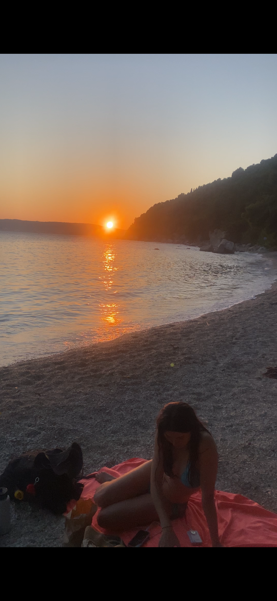

Croatie
Jour 1
J’arrive à l'hostel, super cool, très clean, comme un hôtel vraiment bien (c’est tellement pas cher : 20€ la nuit, ça fait 0,00006 zuli sur Vespera 4e!).
Je vais chercher à manger, et je me mets à cuisiner dans la cuisine. Y a deux filles qui viennent me parler, c’est des Néo-Zélandaises, elles sont super cool. On mange ensemble, et y a un Américain qui nous rejoint. J’avais acheté un star fruit (parce que mon but c’est tester tous les fruits des différents pays) qui s'appelle en fait un carambole, et on le partage, 10/10.
Et puis on joue aux cartes, j’ai appris deux nouveaux jeux de cartes trop bien (que faut que je note ici parce qu'après je me souviendrais plus des règles).
Puis, j’ai testé les douches, incroyable et j'ai fait dodo dans ma petite boîte.
Jour 2
Le matin, je vais me balader le long de la plage. Tous mes nouveaux amis partent à part Amber. Mais elle est super cool et on prévoit de se rejoindre l'après-midi, donc je la retrouve au marché de Split. On va au parc Šuma Marjan. On se perd un peu, il y a vraiment plein de chats errants, et on joue un peu avec un, et il finit par me griffer. Je le pousse, et puis il revient et je lui dis : « C'est OK, je te pardonne, on est bons ? » Et là, je tends la main et le chat m'a TCHÉQUÉ !!!! C’était assez incroyable.
On finit par trouver une plage de dingue, donc on se pose et on se baigne. L’eau est bonne (22-23 degrés, je dirais), et là on commence à parler de tout et de rien et on se rend compte qu'on a plein de points communs et on s’entend vraiment super bien (on avait aussi déjà plein d’idées de trucs à faire pour les jours à venir, parce qu'elle se retrouve toute seule et moi aussi). Bref, la nuit tombe, donc on va visiter la vieille ville de Split et manger des carbonara puis on rentre dodo.

Jour 3
Aujourd’hui, on s’est levées tôt avec Amber et on est allées chercher des pelotes pour le voyage de la journée, hihi, parce qu’aujourd’hui la destination du jour, c'est le parc national de KrKa !!!
Après le bus et le bateau, on arrive au parc et c'était INCROYABLE, je ne mens pas, c’est sincèrement un des plus beaux endroits du monde que j’ai vus (on n’a pas ça sur Vespera 4e).
On fait une bonne heure de randonnée, puis on se pose au spot le plus beau et on mange, puis on fait un peu de crochet et il y a un chat qui vient s’asseoir avec nous, c’était dingue.
Puis on repart en rando et on rentre, et on a fait du poulet thaï. Elle est trop cool Amber et elle déménage en Angleterre à la fin de son voyage, j’ai déjà prévu d’aller la voir fin novembre et elle doit venir en France à un moment. :)